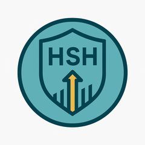
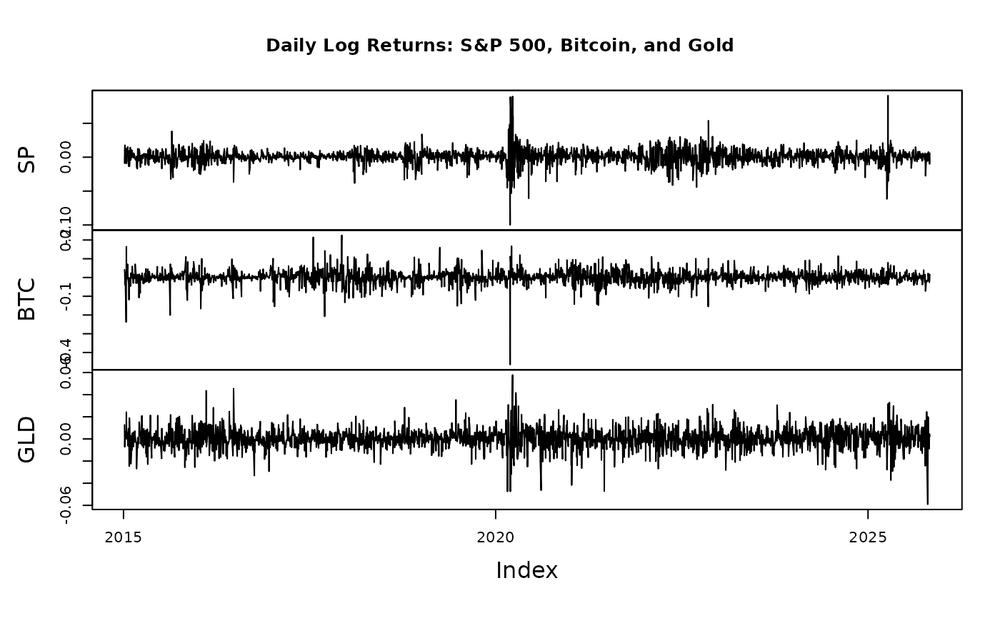

Daily log returns for S&P 500, Bitcoin, and Gold
hedgedata.Rdhedgedata provides daily log returns for three major financial assets:
S&P 500 (SP), Bitcoin (BTC), and Gold (GLD), obtained from Yahoo Finance.
The data are stored as a wide-format zoo object with a Date index.
Format
A zoo object indexed by Date with 3 numeric columns:
- SP
Daily log return of the S\(\&\)P 500 index (Yahoo symbol
^GSPC).- BTC
Daily log return of Bitcoin priced in USD (Yahoo symbol
BTC-USD).- GLD
Daily log return of Gold (front-month futures, Yahoo symbol
GC=F).
Details
Data construction process
The dataset was created using the following R workflow:
library(quantmod)
library(zoo)
symbols <- c("^GSPC", "BTC-USD", "GC=F")
names_vec <- c("SP", "BTC", "GLD")
from <- as.Date("2015-01-01")
to <- Sys.Date()
# Download daily closing prices
get_close <- function(sym, from, to) {
x <- getSymbols(sym, src = "yahoo", from = from, to = to, auto.assign = FALSE)
Cl(x)
}
prices <- do.call(merge, lapply(symbols, get_close, from = from, to = to))
colnames(prices) <- names_vec
# Compute daily log returns
hedgedata <- diff(log(prices))
hedgedata <- na.omit(hedgedata)
# Save into package
usethis::use_data(hedgedata, overwrite = TRUE)Log returns are computed as \(\log(P_t / P_{t-1})\).
Data are daily and aligned by calendar date.
Missing values (due to non-trading days) are left as
NAbeforena.omit().
Examples
data(hedgedata)
head(hedgedata)
#> SP BTC GLD
#> 2015-01-06 -0.008933255 0.04179588 1.271066e-02
#> 2015-01-07 0.011562736 0.02807297 -7.160879e-03
#> 2015-01-08 0.017730168 -0.03804604 -1.818894e-03
#> 2015-01-09 -0.008439322 0.02460744 6.269593e-03
#> 2015-01-13 -0.002581885 -0.17030573 1.297201e-03
#> 2015-01-14 -0.005830029 -0.23755772 8.099452e-05
# Plot all assets' log returns
plot(hedgedata, main = "Daily Log Returns: S&P 500, Bitcoin, and Gold")
